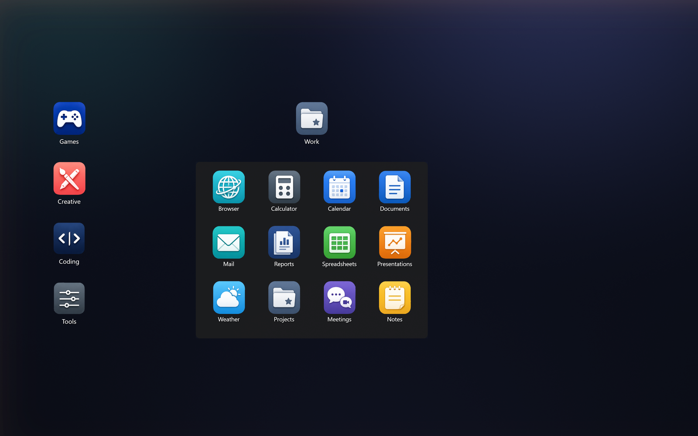
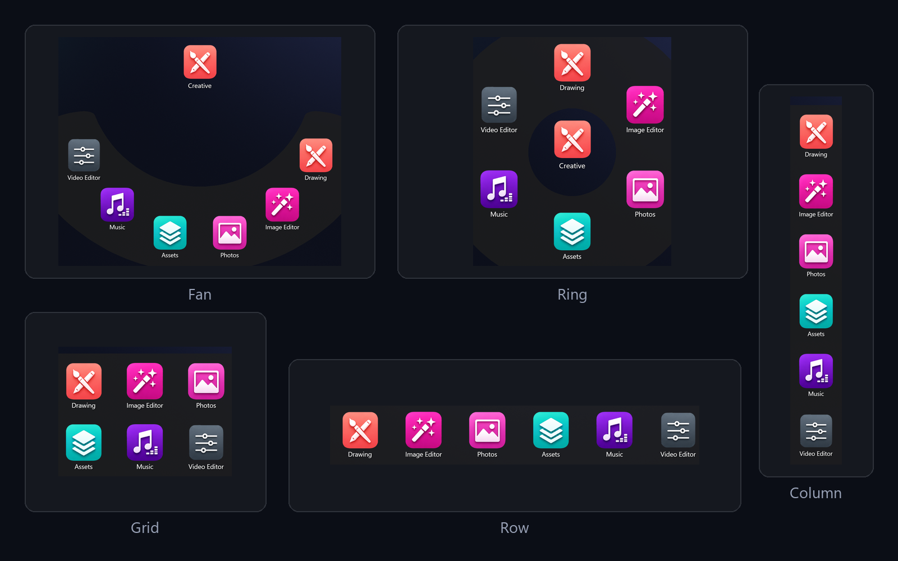
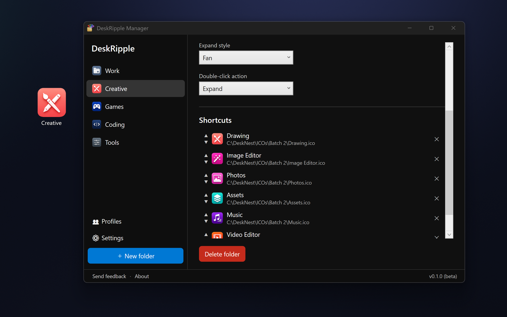

Create a desktop dock
Add a folder from the Manager, choose its expand style, and drop it onto your desktop icon grid.
Free public beta · v0.1.0
DeskRipple is a Windows 11 desktop folder dock. Folder icons sit behind your windows like native desktop icons, then expand into tidy shortcut panels when you hover or click — so you can clear the clutter without burying anything in a Start-menu folder.
Windows 11 (64-bit). Free during the beta, and auto-updates keep you on the current build (this one stops working after September 1, 2026). A paid version is planned later, with a founder discount for beta testers. By downloading you agree to the beta license (EULA).

Why it exists
“My desktop was always either an icon wall, or a pile of shortcuts buried in Start-menu folders.”
DeskRipple is built by a solo developer to make desktop groups that live where your shortcuts already are — on the desktop. Each one takes up a single icon until you reach for it, then collapses out of the way.
It's for Windows users who want organization that feels native, stays light, and never turns into another subscription.
No install required
The demo lets you feel the core interaction first — Grid, Fan, Column, Row, and Ring. It's the fastest way to tell whether DeskRipple fits how you work.
How it works
It isn't a live folder mirror and it isn't an auto-sorter. It's a fast way to group the shortcuts, files, apps, and links you already reach for.
Add a folder from the Manager, choose its expand style, and drop it onto your desktop icon grid.
Drag in desktop shortcuts, files, web links, or Store apps. DeskRipple keeps its own copy, so entries don't break when the originals move.
The folder fans out the moment you reach for it, then collapses back to a single desktop icon when you're done.
Built for Windows 11 desktops
The hard parts are the ones you only notice when they go wrong: icon sizing, grid placement, mixed display scaling, and never losing a shortcut.
Docks sit behind your windows like native desktop icons, snap to the live icon grid, and match the rendered icon size on each monitor.
Grid, Fan, Column, Row, and a full 360° Ring — with acrylic-blur panels and smooth open/close animations. Pick the layout per folder.
Drop .lnk shortcuts, web links, files, or Microsoft Store apps straight in. DeskRipple keeps its own copy so a dock survives the original being moved or renamed.
Drag a desktop shortcut into a dock and the original tucks away safely. Remove it (or uninstall) and it comes right back — or switch to Copy mode to leave originals in place.
Drop a dock onto a cell that's already taken and the native desktop icon politely shifts to the nearest free spot — nothing gets buried.
Switch between named desktop setups — say Work and Home — without rebuilding your folders from scratch.
Per-Monitor V2 aware — designed to keep docks crisp and correctly placed across displays running at different scales.
Create folders, set each one's expand behavior, and give it its own icon — all from a single Manager window.
No account, no trackers — data stays in %APPDATA%. One installer with no separate .NET and no admin rights, plus silent auto-updates you can switch off.
See it in action
The desktop behavior, the expand styles, and the Manager where it all gets configured.


Trust & privacy
DeskRipple is honest about the beta, clear about privacy, and public about its releases on GitHub.
%APPDATA%The app works fully without an account. The only default network traffic is the update check against GitHub — no identifiers, nothing about you or your setup. Anonymous diagnostics are sent only if you turn them on.
Requirements
The installer is self-contained — no separate .NET, WPF, or runtime to install.
Full compatibility notes are in SYSTEM_REQUIREMENTS.md.
FAQ
Yes — it's free during the public beta, with no account and no payment info required. A one-time paid version is planned for later, and beta testers get a founder discount when it ships. It's a one-time app, not a subscription.
DeskRipple runs from the system tray rather than a window, and on Windows 11 new tray icons start hidden in the ^ overflow near the clock. Click the chevron, drag the DeskRipple icon onto the visible taskbar, then double-click it (or right-click → Open Manager) to add your first folder.
This beta build stops working after that date, so you'd switch to a newer build. With automatic updates left on, you'll always be on the latest one anyway — and the goal is to reach the paid launch with a fresh build before the beta expires.
DeskRipple is code-signed with Microsoft Trusted Signing, so Windows can verify the publisher — but it can still warn on a brand-new app that hasn't built download reputation yet. The prompt is milder than for unsigned software. Click More info → Run anyway to continue.
No. DeskRipple keeps its data locally in %APPDATA%. The only default network request is the GitHub update check. Anonymous diagnostics are opt-in and off by default, and the app works fully without them.
By default they're moved — a tidier desktop is the point. The original is tucked into an archive folder, never deleted, and it comes right back when you remove the shortcut from DeskRipple or uninstall. Prefer to keep originals in place? Switch to Copy mode in Settings.
No. DeskRipple keeps its own entries for the items you add, so a dock stays stable even if the original desktop shortcut is moved, renamed, or cleaned up.
It's built and tested for Windows 11 (64-bit). Most of it works on Windows 10 22H2, but desktop-icon displacement and the acrylic backdrop are tuned for Windows 11, so 10 is unofficial and unsupported.
From Settings → Apps → Installed apps, like any program. It's a clean removal: it puts any archived desktop shortcuts back, removes its startup task, and deletes its data folder. Nothing is left behind.
DeskRipple needs ongoing work for Windows updates, mixed-DPI setups, multi-monitor edge cases, and support. The plan is a one-time paid app — not a subscription — with a founder discount for beta testers.
Download
Run the installer and you're done — DeskRipple keeps itself up to date and uninstalls from Settings → Apps like any other program. Beta testers get a founder discount when it moves out of beta.
Prefer not to run an installer? Grab the portable ZIP (extract and run) instead.
Windows 11 (64-bit). Free during beta — this build stops working after September 1, 2026. Auto-update is on during beta and can be turned off in Settings → Updates. By downloading you agree to the beta license (EULA).